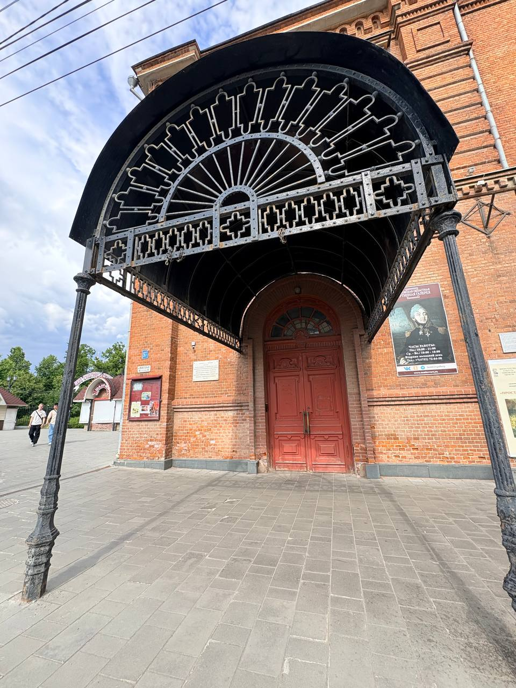

Тамбовская область · г. Тамбов · ул. Советская, 97
Картинная галерея
Готовый учебный сайт о Тамбовской областной картинной галерее: история здания, фотографии, панорамы, видео, сценарии посещения, интерактивные задания, карты, маршруты, QR-код и список источников.

Почему выбрана эта галерея
Тамбовская областная картинная галерея выбрана для проекта, потому что это узнаваемое культурное место города, где соединяются история, архитектура и искусство. Галерея находится в историческом здании Нарышкинской читальни, а ее экспозиция помогает увидеть Тамбов не только как современный город, но и как часть культурной истории России.
Для студентов такой объект удобен и интересен: до него можно добраться по городскому маршруту, внутри можно провести экскурсионное наблюдение, сделать фото и видео, обсудить впечатления и оформить полноценный исследовательский сайт.